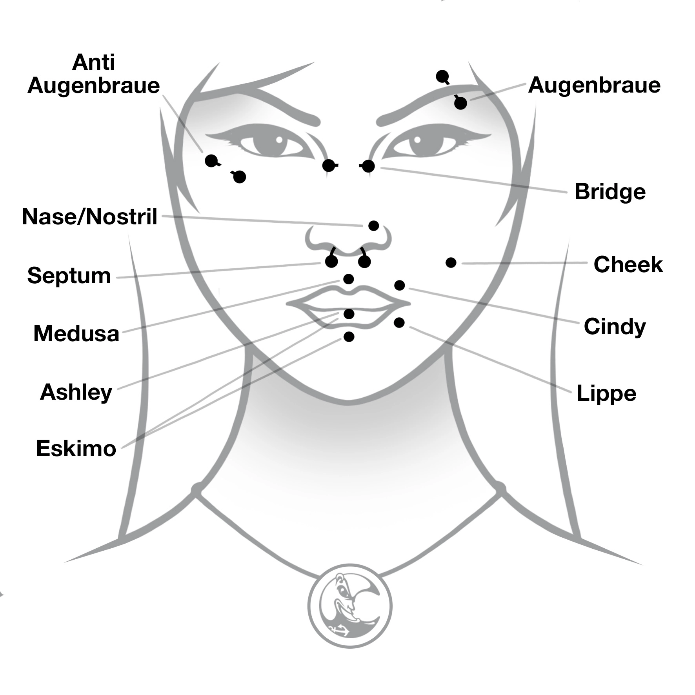

Für alle, die weiter gehen wollen. Wir beraten Dich ehrlich, arbeiten unter hygienisch einwandfreien Bedingungen und kompromisslos sicher.
Das Schneiden von Ziernarben ist eine der ältesten Formen der Bodymodification. Das Design wird auf die Haut gezeichnet, anschließend schneidet der Cutter mit einem Skalpell in gleichbleibender Tiefe (ca. 3 mm) entlang der Linien. Das Narbenbild wird stark durch Behandlung und Nachsorge beeinflusst — das endgültige Ergebnis ist oft erst nach 6 bis 12 Monaten zu erkennen. Wegen der großflächigen Wunde ist konsequente Hygiene während der gesamten Heilung entscheidend.
Ein keilförmiger Teil wird aus dem Ohr geschnitten, die Ohrhälften anschließend wieder zusammengenäht — so entsteht eine spitze Form. Nach milder antiseptischer Wundversorgung werden die Fäden nach 7 Tagen gezogen. Risiko: mögliche Verwachsung des Knorpels nach außen.
Ein kleiner Eingriff, bei dem das Ohrläppchen rekonstruiert und ein zu großes Loch verschlossen wird. Meist mit örtlicher Betäubung: Der gedehnte Teil wird teilweise entfernt, die frische Wunde zu einem Keil geformt und mit sehr dünnen Fäden zusammengenäht.
Implantate, die sich vollständig unter der Haut befinden, um die Struktur des Körpers gezielt zu verändern.
Die Zunge wird mit einem Skalpell zwei bis fünf cm entlang der Mittellinie gespalten. Die Länge richtet sich nach der Beschaffenheit der Zunge.
Bodymodification ist Vertrauenssache. Wir nehmen uns Zeit, klären ehrlich über Technik, Heilung und Risiken auf und führen nur durch, was verantwortbar ist.